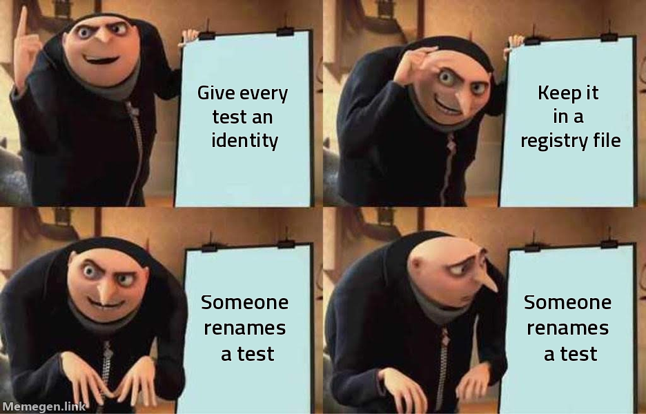

The C-id test-identity scheme
How a test earns a durable name: a C-id token inside the test's own text, project-global and monotonic, where the corpus itself is the registry.
A C-id is the durable name a test carries for its whole life. When /gabe-red declares a case, it gives it an id like C147 — and that id then rides the test through every run, every report, and every future session, so a claim like "this behavior is covered" becomes something a machine can check instead of something a person asserts.
01The id lives inside the test's own name
The C-id is not metadata in a sidecar file. It is a token inside the test's own text or name, where the test itself carries its identity everywhere it goes:
def test_clamps_negative_quantity_C147v2():
...it('C147v2 · clamps negative quantity to zero', () => { ... })Ids are project-global and monotonic — C1, C2, … C147 — allocated once and never reused. Because the id is in the name, it appears automatically in the junit report the test runner already produces, with zero extra plumbing.
02The corpus is the registry
There is no test-registry.json to keep in sync — and that absence is the whole point. The body of test files is the registry:
- Allocation is a
grep— the next free id is one past the highestC[0-9]+in the corpus. - History is
git log -S "C147"— the full story of when a case was born, changed, or moved, recovered straight from version control. - Reporting is free — the id is already in the junit output, so the command center's test matrix stitches every run to its case with no export step.
A registry file would drift the moment someone forgot to update it; the corpus can't drift from itself.

03When the id bumps
A revision suffix (v2) is added when the claim the test makes changes — not when the test is merely re-run or refactored internally:
| Situation | Id |
|---|---|
| Same test, run again | C147 — unchanged |
| Test tidied, same assertion | C147 — unchanged |
| The asserted behavior itself changes | C147 → C147v2 |
A bump renames the test, so its junit history shows a discontinuity at the rename. The matrix stitches across it by the shared stem (C147), but the discontinuity is real and deliberate — a changed claim should read as a new chapter, not a silent edit of the old one.
04What a C-id is never
Three tempting schemes were rejected, each because it drifts:
- Never path-keyed (
tests/auth/test_token.py::test_expired) — renaming or moving the file silently orphans the identity. - Never phase-scoped (
phase-7-case-3) — phases archive when they complete, taking the id with them. - Never a separate registry file — the one artifact you must remember to update is the one that goes stale.
The id belongs to the claim, so it must live where the claim lives: in the test.
05C is for cases, M is for findings
Sweeps that allocate ids use an anchored token pattern, because a bare C[0-9]+ over-matches — it would turn RFC1234 into a phantom C1235. And one neighbor gets its own letter to avoid a collision: /gabe-myopic labels its short-sighted-user findings M[N], not C[N], so a myopic finding is never mistaken for a test case. (See Analysis satellites for what /gabe-myopic produces.)
- /gabe-red — the beat where a case is born and gets its C-id.
- The command center — where C-ids become the test matrix: per case, its ever-red history, status, and last run.
- The one picture & the four laws — why identity-that-can't-drift is a precondition for anti-curation.